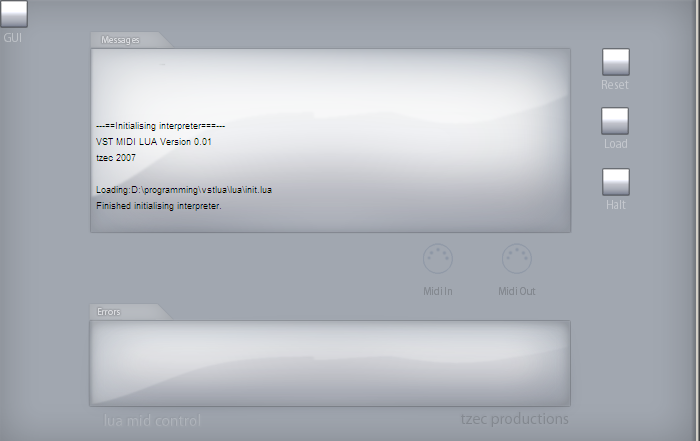

VSTLua
Email: johnhw@gmailWASP.com minus the insect

The main GUI
Download
THIS IS A BETA! Do NOT download unless you're willing to live with bugs!
DOWNLOAD IT (v0.06)
If you'd like the source code, well, that's here.
Index
- The documentation is here.
- Want to get started right away? See the quickstart.
- If you're new to Lua
and want an introduction, see the brief Lua guide.
- A list of scripts included with VstLua is here. Have a browse, see some of the cool stuff that can be done in a few lines of Lua :)
FAQ (read me!)
- What does VstLua do?
- It allows simple scripting of MIDI events in a VST. It does not have any audio manipulation facilities. It is purely for MIDI control.
- And why is that useful?
- It replaces many custom VST MIDI manipulators with a quick and easy way of scripting MIDI events. It provides support
for limited GUI creation, so that scripts can set up their own control panels. New scripts can be quickly rapid
prototyped without restarting the host.
- For example?
- Say, for example, I want add a new note, a fifth above the original, if the note is above middle C, and a fifth below if it is below. All that is needed is a script like:
function midiEventCb(midiEvent)
if midiEvent.type==midi.noteOn or midiEvent.type==midi.noteOff then
local note = midiEvent.byte2
-- decide whether to transpose it up or down
if note>=noteToNumber('C-5') then
note = midiEvent.byte2 + interval.fifth
else
note = note - interval.fifth
end
midiEvent.byte2=note
end
sendMidi(midiEvent)
end
See the API for details.
- I'd like to use VSTLua to process MIDI before my host receives it.
- You need to wrap up VSTLua as a standalone program. The best way to do this is to use
Hermann Seib's fantastic, free SaviHost . Copy savihost.exe to vstlua.exe and copy in beside vstlua.dll. Now vstlua.exe will work as a standalone. Make sure you have a MIDI loopback installed (for example MIDI Yoke), and you can route midi from input devices, to VSTLua, and then to your host.
- I can't load it in Sonar/Cubase/FL Studio/Live!
- It crashes my host!
- Well, it's a beta, and there are probably lots of bugs. Actually, I know there are lots of bugs. Please send me details of (a) which host you are using and
(b) which script you were using and (c) what exactly happens.
- I'm using Sonar, but the timing seems to be wobbly.
-
Sonar's support for VST MIDI plugins seems to be broken. MIDI deltas are not propagated forward and are just set to zero. Complain to Cakewalk!
- What license is it under?
VstLua is released under a BSD license. The source code is available (see the link at the top).
* Copyright (c) 2007, John Williamson
* All rights reserved.
*
* Redistribution and use in source and binary forms, with or without
* modification, are permitted provided that the following conditions are met:
* * Redistributions of source code must retain the above copyright
* notice, this list of conditions and the following disclaimer.
* * Redistributions in binary form must reproduce the above copyright
* notice, this list of conditions and the following disclaimer in the
* documentation and/or other materials provided with the distribution.
* * Neither the name of the nor the
* names of its contributors may be used to endorse or promote products
* derived from this software without specific prior written permission.
*
* THIS SOFTWARE IS PROVIDED BY ``AS IS'' AND ANY
* EXPRESS OR IMPLIED WARRANTIES, INCLUDING, BUT NOT LIMITED TO, THE IMPLIED
* WARRANTIES OF MERCHANTABILITY AND FITNESS FOR A PARTICULAR PURPOSE ARE
* DISCLAIMED. IN NO EVENT SHALL BE LIABLE FOR ANY
* DIRECT, INDIRECT, INCIDENTAL, SPECIAL, EXEMPLARY, OR CONSEQUENTIAL DAMAGES
* (INCLUDING, BUT NOT LIMITED TO, PROCUREMENT OF SUBSTITUTE GOODS OR SERVICES;
* LOSS OF USE, DATA, OR PROFITS; OR BUSINESS INTERRUPTION) HOWEVER CAUSED AND
* ON ANY THEORY OF LIABILITY, WHETHER IN CONTRACT, STRICT LIABILITY, OR TORT
* (INCLUDING NEGLIGENCE OR OTHERWISE) ARISING IN ANY WAY OUT OF THE USE OF THIS
* SOFTWARE, EVEN IF ADVISED OF THE POSSIBILITY OF SUCH DAMAGE.**
How do I build VSTLua?
Why aren't there many scripts?
- Because you haven't written them yet! If you write a useful script, please send it to me so
I can include it the next release. Actually, there are quite a few scripts now, but please send me more. Especially if you do some cool algorithmic music stuff!
Why Lua? Why not Python/Ruby/Java/Lisp...?
- Lua is comparitively very efficient.
- Lua is very lightweight. Nobody wants to deal with setting up Java just to get a plugin to work. Lua just compiles in nicely.
- Lua has a very simple syntax but is very powerful.
It would be really nice if GUI control XXX was added!
- If you have a good idea of how a new GUI control could be used, let me know. Soon, it
should be possible to define new GUI controls inside Lua, so you can add and customize your own.
Uhh, the GUI controls all reset to their original values when I close the VST window.
- That's supposed to happen. If you want the values to persist, copy them to and from the
VST parameters. The wrapper scripts defined in lua/gui.lua allow you to automatically connect
GUI controls to VST parameters.
Changelog
Ver 0.06
SysEx support (not very useful atm, as virtually no hosts support VST sysex, except for VSTHost).
Infinite loop trapping added.
Persistent storage of data between sessions (read and write from the table called "persistence").
Fast interprocess messaging via shared memory, so multiple instances of VstLua can talk with minimum latency.
setHostTime added (for Bidule users).
much simplified GUI access.
Easier to do midi mapping with the new addMidiFilter() function.
Console window, so commands can be run and executed immediately
Scripts are associated with presets. (thanks for the idea austinfx!)
Ver 0.05
GUI resizing.
Bug fixes.
Better docs.
Key handling.
Drag-n-drop support.
Vu meters.
GUI bitmaps can be overriden by user.
More complex microtuning example script.
Ver 0.04
Many more scripts
Some bugs fixed, especially when loading multiple instances
custom GUI changed (again)
Ver 0.03
Better script organization.
Less crashing (again).
Full OSC support.
Ver 0.02
shinier gui
gui component sizes are passed to controls
xypad added
text control added
file selector added
now threadsafe!
menus can be hierarchical
simple scheduler added (see init.lua)
less crashing
fixed midi out not showing in eXT
added getCycle and getBarStart functions
added saveProgramCb and loadProgramCb functions when just before/just after programs changed
compiled in luasockets so network access is possible (maybe we will see OSC sometime soon :) )
code cleaned up, windows specific stuff moved to separate file as far as possible, other stuff ifdef'd appropriately
photoshop file for the gui is now in the source distribution